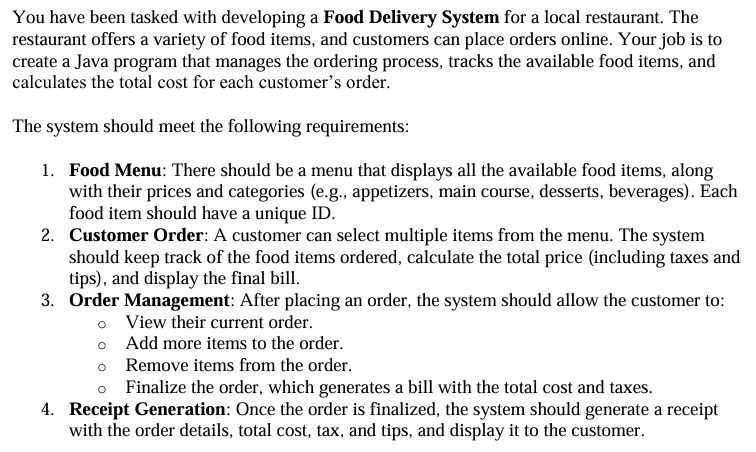
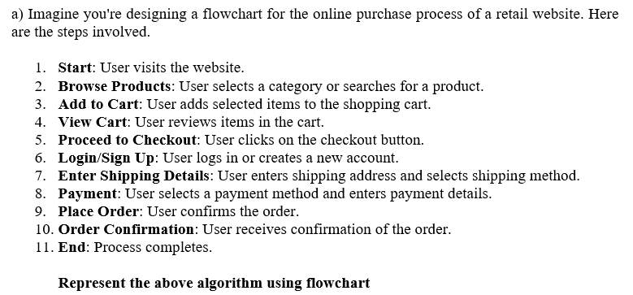
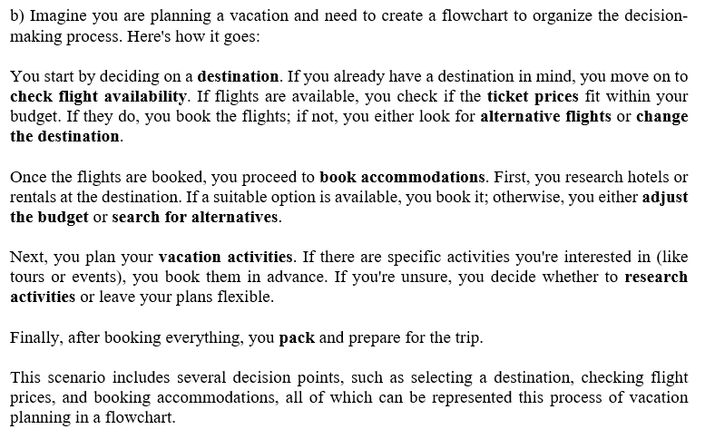

Expected after the fixes: Q1 fills with a complete Java program in a code block, Q2 and Q3 with text flowcharts in code blocks (branches written out), Q4 with pseudocode in a code block. Nothing should end with a stray “FULL_” line. Each load has a fresh variant token, so answers are never served from cache; each run costs 4 credits.



Write an algorithm that validates a password entered by a user. The password must be at least 8 characters long and must contain at least one uppercase letter, one lowercase letter, one number and one special character. If any condition is not met, the algorithm should display which condition(s) failed; otherwise it should display a success message.